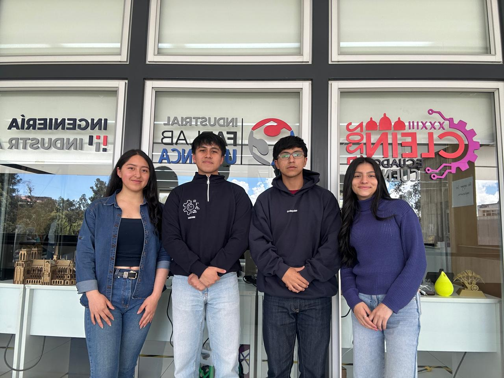
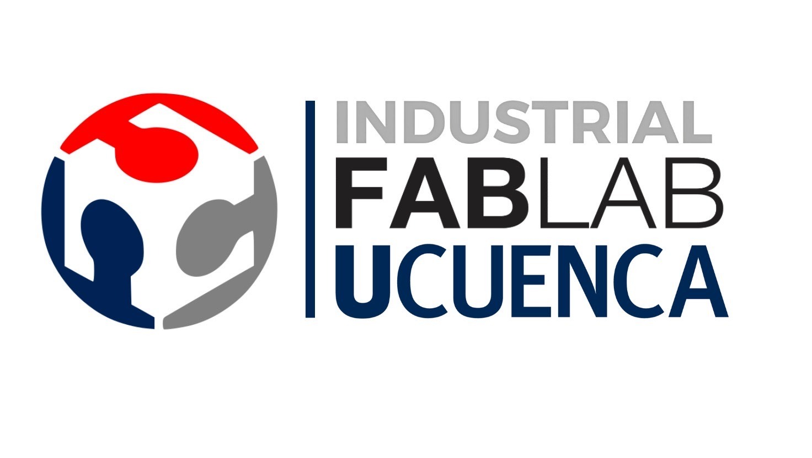
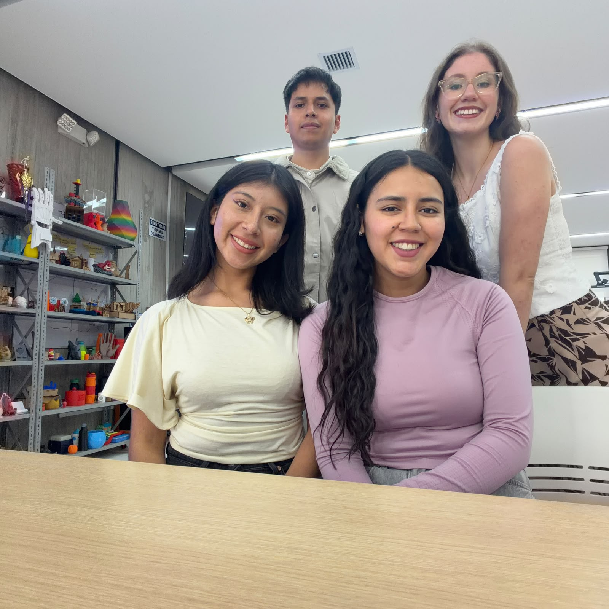
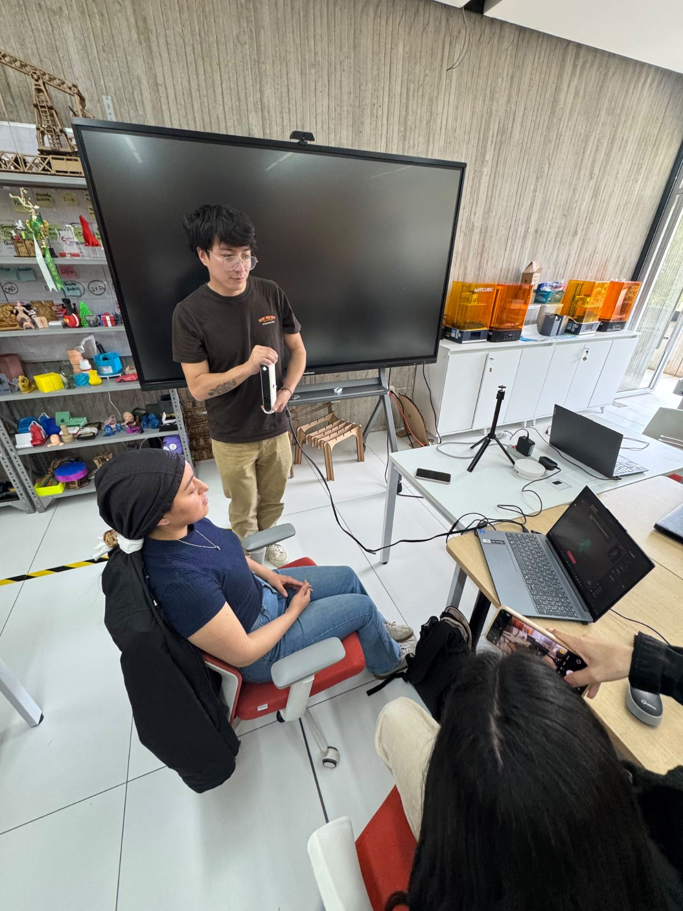
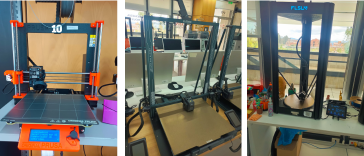
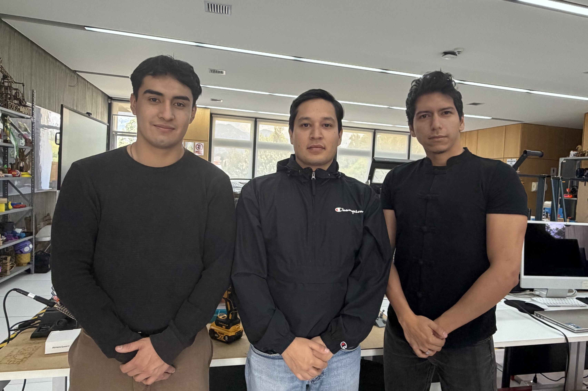
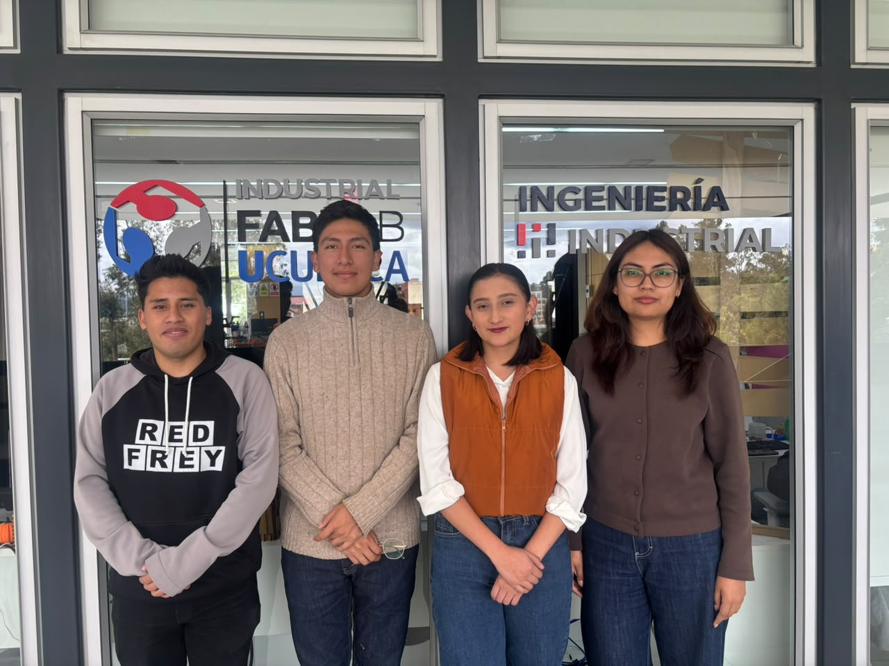
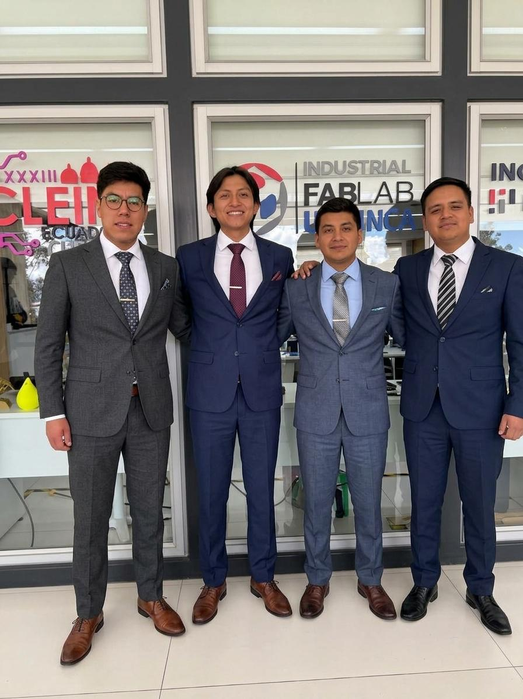

EQUIPO 01 4 INTEGRANTES
Innovación y desarrollo de nuevos productos
Diseño de producto y documentación del proceso.
Integrantes
- Andy Campoverde
- David Dalgo
- Michelle Idrovo
- Denisse Inga
Fotografía del equipo · Fuente: sitio del equipo

Hablemos de tu idea ↗APRENDER HACIENDO / INDUSTRIAL FABLAB UCUENCA
El aprendizaje toma forma.
Conoce a los equipos y explora sus trabajos, procesos y bitácoras de fabricación digital.
COMUNIDAD QUE CREA
Cada tarjeta abre el sitio del equipo en una nueva pestaña. Descubre sus avances directamente en sus bitácoras.

EQUIPO 01 4 INTEGRANTES
Diseño de producto y documentación del proceso.
Fotografía del equipo · Fuente: sitio del equipo

EQUIPO 02 4 INTEGRANTES
Diseño y fabricación digital aplicados a la ortopedia infantil.
Fotografía del equipo · Fuente: sitio del equipo

EQUIPO 03 4 INTEGRANTES
Bitácora de investigación, diseño y desarrollo de una maceta inteligente.
Evidencia de la práctica · Semana 03 · Fuente: sitio del equipo

EQUIPO 04 4 INTEGRANTES
Asignaciones, experimentación y fabricación digital semana a semana.
Evidencia de la práctica · Semana 03 · Fuente: sitio del equipo

EQUIPO 05 3 INTEGRANTES
Una bitácora de taller: pensar, probar y hacer.
Fotografía del equipo · Fuente: sitio del equipo

EQUIPO 06 4 INTEGRANTES
Fabricación digital con la naturaleza como punto de partida.
Fotografía del equipo · Fuente: sitio del equipo

EQUIPO 07 4 INTEGRANTES
Desarrollo y documentación de proyectos de Ingeniería Industrial.
Fotografía del equipo · Fuente: sitio del equipo
El proceso también es parte del resultado.
Conecta con el FABLAB ↗